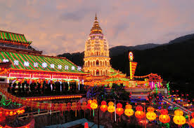
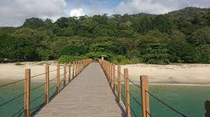
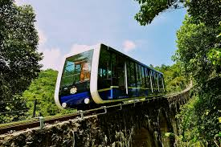
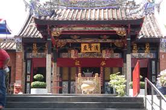

☰ Menu
Tourist Spot
Penang has always been one of the most popular
tourist destinations in Malaysia. Throughout history, the country
welcomes some of the most influential people, including W. Somerset
Maugham, Rudyard Kipling, Lee Kuan Yew, Queen Elizabeth II and Prince
Charles. Penang is known for its rich cultural heritage and architecture,
vibrant multicultural society, extensive modern entertainment and retail
options, natural landscapes such as beaches and hills, and world-famous
Penang cuisine. Unlike other Malaysian countries, Penang does not rely
solely on air transport to attract tourists. In addition to Penang
International Airport, Swettenham Pier is located in the heart of Georgetown
and has become one of the state's major tourist destinations. As of 2017,
Penang attracted nearly 8.6 million visitors, with an airport reception record
of 7.2 million and a terminal registration of 1.35 million. In the same year,
Penang provided a tourism tax of nearly RM3.9 million, making it the third
largest tourist tax in Malaysia after Kuala Lumpur and Sabah.
Kek Lok Si

Kek Lok Si Temple is a Buddhist temple located in Air Itam, Penang, Malaysia.
It is the largest Buddhist temple in Malaysia and an important pilgrimage center for Buddhists from
Hong Kong, the Philippines, Singapore and other Southeast Asian countries. The entire temple complex
was built between 1890 and 1930 and is an inspiring initiative of Abbot Beb Lean. The main attractions
of the complex are the striking seven-story Talama Six Pagoda (Wanbao Tower), the 10,000-story alabaster
and bronze Buddha statue, and the 36.57-meter (120.0-foot) Guanyin bronze statue. mercy. Mahayana Buddhism,
Buddhism and traditional Chinese rituals merge into a harmonious whole, both in temple architecture and art,
and in the daily activities of worshippers.
Penang National Park

A day trip to Pulau Pinang is to the Taman Negara, northwest corner of the island of Teluk
Bahang. The public transport (RapidPenang bus) from George Town or Batu Ferringhi provides easy access to the
park and offers a variety of activities for all families. There are some of the best beaches on the island. You
can choose to take a boat trip or jungle trekking on the horns and hills. If you are lucky, you will encounter some
park wildlife, or you can Find a quiet place to watch birds or fish.
Penang Hill

The Penang Hill, also known as the Malay name Bukit Bendera, actually refers to the
most developed mountain, Mount Flagstaff. The Penang Mountains cover many hills, and the highest point of
the Western Hills is 833 meters (2,733 feet) above sea level. The hills stand out from the lowlands and are
a hilly and forested area. It was used as a retreat during the British colonial period and is now a popular
tourist destination in Penang. From the base station of the Peak Train Station, you can reach the top of the
mountain via the Penang Hill Railway. To date, this ropeway system is the only such cable car system in Malaysia.
As of 2014, more than one million visitors were transported to the top of Penang.
Operation Hours:
Daily train opening hours - 6:30 am - 11:00 pm (the last train at the highest train station)
Daily ticket counter opening hours - 6:30 am to 10:30 pm
Sunrise_Sunset Promotions: 6:30 am to 9:00 pm, 7:00 pm to 10:30 pm (MyKad and MyKid holders only)
The promotional price applies only to Malaysian citizens (MyKad and MyKid holders only).
Snake Temple

The Snake Temple is located in Bayan Lepas Sungai Kluang, southwest of Penang,
Penang, Malaysia. It is perhaps the only such temple in the world. Burning incense and all kinds of
smoke are everywhere in the temple. People believe that these snakes are harmless to the sacred smoke,
but as a safety precaution, the snakes are also expelled, but their fangs are still preserved. Warning
visitors should not pick up reptiles and take pictures on their bodies. Local devotees believe that the
snakes in the temple are voluntary. The temple was built in 1850 to commemorate Chor Soo Kong, built by a
Buddhist monk. Chor Soo Kong (also known as Qingshui) was born in the Song Dynasty (960-1279), surnamed Tan
Chhiau-eng. He pursued spiritual achievements very seriously and was appointed at an early age. According
to legend, Chor Soo Kong is also a therapist, sometimes providing shelter for snakes in the jungle. When he
died after good deeds, at the age of 65, he was awarded the honorary title of Chor Soo, an outstanding figure
from generation to generation. After the temple was built, it was reported that the snake appeared. Originally
known as the "Blue Cloud Temple", this temple commemorates the beauty of the sky in Penang.